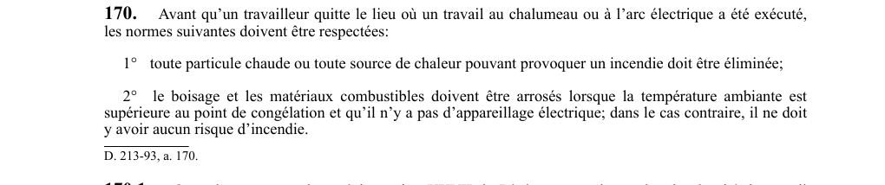

art-170-RSSM : sécurité incendie fin travaux chalumeau
Un article du wiki ⚖️ Recueil législatif
En bref
Avant de quitter le lieu de travaux au chalumeau ou à l'arc électrique. Cette obligation vise le travailleur et l'employeur.
- Tout travail de soudage.
- Température ambiante supérieure au point de congélation pour arrosage.
- Norme ACNOR W 117.2-94, chap. 10 (sauf section 10.10)
🌐 LegisQuébec · 📄 PDF officiel
Texte officiel : capture du PDF

Toucher l'image pour l'agrandir🔗 Voir art. 170 RSSM dans le PDF (page 55)
Version : texte officiel du RSSM (RLRQ c. S-2.1, r. 14), à jour au 1er mai 2024 — Éditeur officiel du Québec
Voir aussi
- art. 168 : dispositifs anti-retour boyaux chalumeau · obligation : le boyau d'alimentation en oxygène et celui en gaz combustible d'un chalumeau doivent être munis d'au moins un dispositif anti-retour de gaz et d'au moins un dispositif anti-retour de flammes, installés selon les instructions du fabricant.
- art. 169 : préparation lieu travaux chalumeau arc · obligation : avant des travaux au chalumeau ou à l'arc électrique, les matériaux combustibles à proximité doivent être enlevés, arrosés ou protégés des flammes et particules chaudes, les boyaux, bouteilles et appareils de soudure doivent être protégés.
- art. 171 : interdiction sources ignition zone méthane · interdiction : dans toute partie d'une mine souterraine où du méthane est présent, il est interdit de posséder une allumette, un briquet, une cigarette ou toute autre source potentielle de chaleur.
- art. 172 : dégagement méthane concentration inconnue · obligation : lorsqu'un dégagement de méthane est détecté et que sa concentration n'est pas connue, toute source d'ignition doit être éliminée, les appareillages électriques mis hors tension, et les lieux affectés évacués, sauf pour le travailleur chargé de mesurer la concentration.
- ⚖️ Loi habilitante : LSST
- ↑ Index du bloc : Sautage et explosifs
Pages qui pointent ici (5)
- art-168-RSSM : dispositifs anti-retour boyaux chalumeau Recueil législatif
- art-169-RSSM : préparation lieu travaux chalumeau arc Recueil législatif
- art-171-RSSM : interdiction sources ignition zone méthane Recueil législatif
- art-172-RSSM : dégagement méthane concentration inconnue Recueil législatif
- RSSM : Sautage et explosifs (art. 161 à 200) Recueil législatif